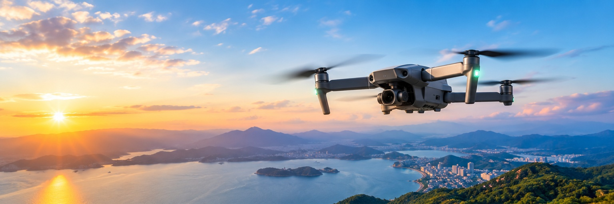
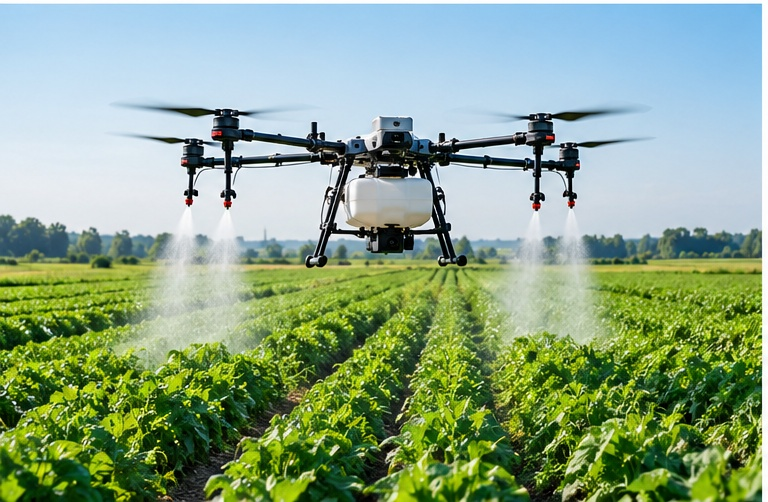
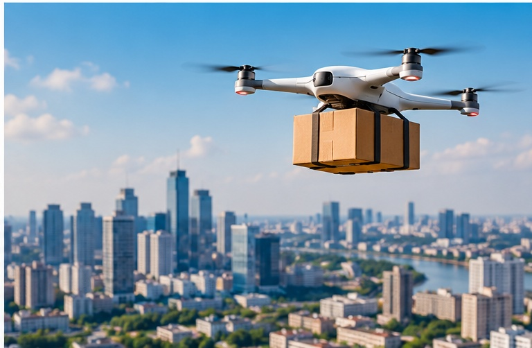

━ DIGITAL MARKETING & SOCIAL MEDIA • DRONE
A visual guide to drones, their applications, and how aerial technology becomes powerful digital content, campaigns and communities.
Drones are no longer just flying cameras. They are tools for agriculture, logistics, surveying, entertainment, public safety and brand storytelling.
From compact creator machines to industrial aircraft, each category solves a different problem.
Aerial photography, filmmaking, real-estate tours and social-first content.
Learn more →Crop monitoring, mapping and precision farming for modern agriculture.
Learn more →Surveying, 3D mapping, construction progress and infrastructure inspection.
Learn more →Situational awareness, search operations and infrastructure monitoring.
Learn more →
APPLICATION 01 / AGRICULTUREA drone gives marketers something people stop scrolling for: scale, motion and a point of view they cannot get from the ground.
Delivery drones show how aerial technology can move beyond content creation into real services.

Smarter navigation, object detection and autonomous workflows.
Faster transmission makes real-time aerial storytelling more practical.
Businesses can access specialist aerial capability without owning a fleet.
This website covers drone categories, applications, digital marketing opportunities and social media strategy.
Turn one flight into
a week of content.
A single aerial shoot can become a complete content system across platforms.